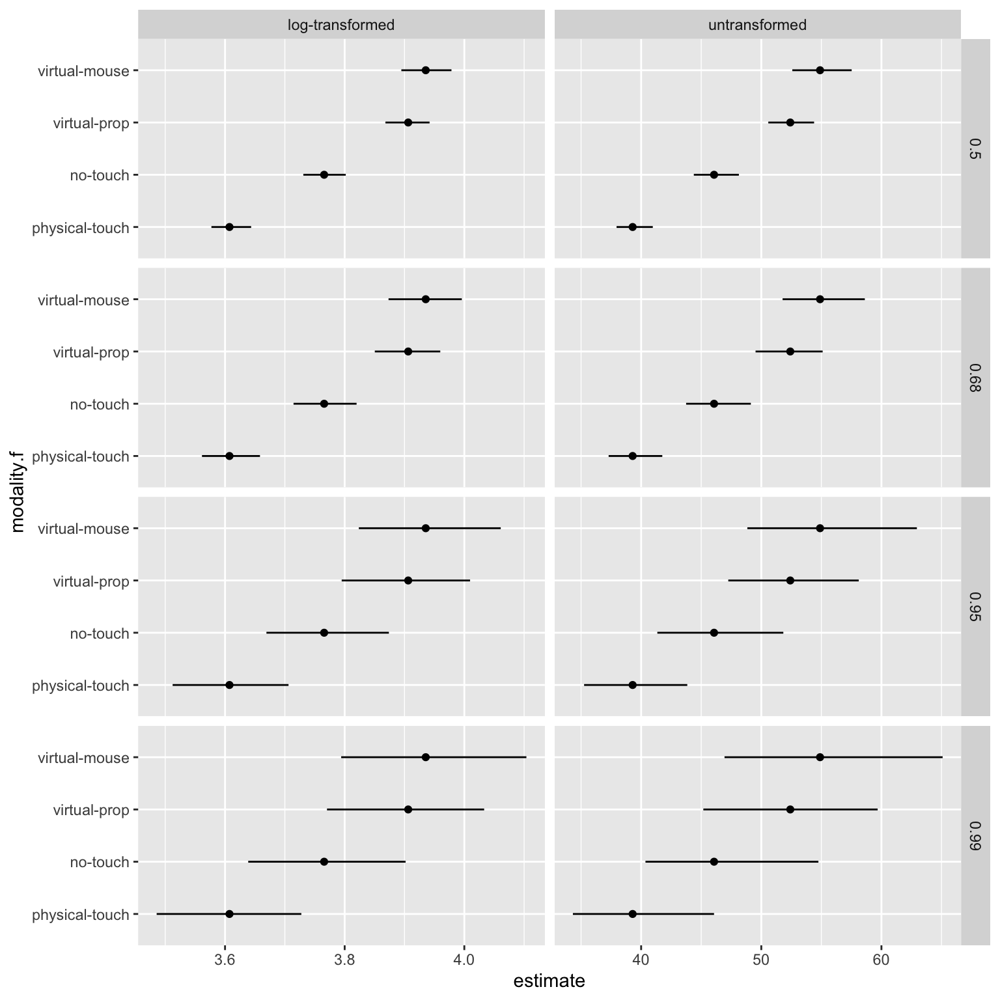
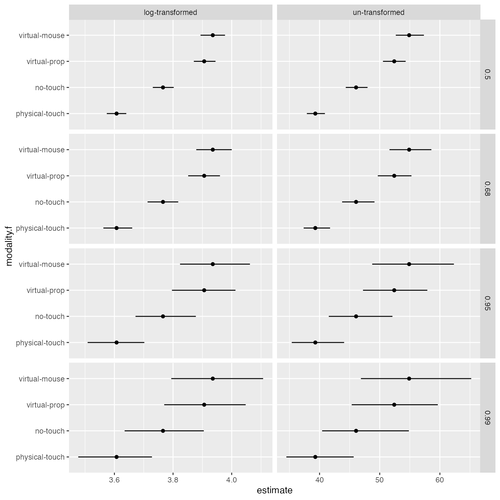

branch.RmdIn a multiverse analysis, researchers identify sets of defensible analysis choices (e.g., different ways of excluding outliers, different data transformations), implement them all, and then report the outcomes of all analyses resulting from all possible choice combinations. Thus, a multiverse analysis consists of different paths or branches of analysis for the same problem.
For an example of how a branch might arise during analysis, let’s say that you have a variable, \(x\), which can assume any value between 1 and 60. You want to discretise this variable into two ordinal categories — high (if x >= 30) and low (if x < 30). However, another researcher might argue for discretising this variable into three ordinal categories — high (if x >= 40), medium (if 20 <= x < 40), and low (if x < 20).
An important aspect of this package is to make declaring such branches in the analysis more natural and convenient. Each branch is identified by a parameter, which can take two or more options. Thus, the different options are different branchings within the multiverse. A branch may be defined for:
Data substitution parameters which offer to switch between different raw datasets, either collected or simulated.
Data processing parameters which offer to process the same raw data in different ways before it is analyzed.
Modeling parameters offer different ways of analyzing the same processed data
Presentation parameters offer different ways of presenting analysis outcomes
In this document we describe different ways of declaring a branch, using different syntactical styles that are popular with R users, including base R syntax and tidyverse syntax.
Let’s say that there is a variable x which can take any of three different values — “low”, “medium”, “high”. We can perform the effect of encoding x as each of these values separately through separate branches. To do this, we first create a multiverse object, M and then declare x as three possible values within the multiverse using the branch() function.
M = multiverse()
M$x <- ~ branch(a_parameter, "low", "medium", "high")
multiverse_table(M) %>%
select(.universe, everything())## # A tibble: 3 x 5
## .universe a_parameter .parameter_assignment .code .results
## <int> <chr> <list> <list> <list>
## 1 1 low <named list [1]> <list [1]> <env>
## 2 2 medium <named list [1]> <list [1]> <env>
## 3 3 high <named list [1]> <list [1]> <env>Let’s say that we have some data which indicates the amount of time spent by a user in four different conditions, 1, 2, 3 and 4.
data("userlogs")
data.userlogs.raw = userlogs %>%
mutate( modality = factor(modality) ) %>%
arrange(modality) %>%
mutate(index = rep(seq(1:(nrow(.)/4)), 4))The data variable duration is approximately normally distributed, however, as is common with such data it has a long right-tail. Before using a regression model, we can choose to either log-transform the data, or assume that it is normally distribution and analyse it. We can perform both analysis in our multiverse by declaring two branches — one where the variable is log-transformed and the other where it is not.
M = multiverse()
M$df <- ~ data.userlogs.raw %>%
select(modality, duration) %>%
mutate( duration = branch( data_transform,
"none" ~ duration,
"log" ~ log(duration)
))
multiverse_table(M)## # A tibble: 2 x 5
## .universe data_transform .parameter_assignment .code .results
## <int> <chr> <list> <list> <list>
## 1 1 none <named list [1]> <list [1]> <env>
## 2 2 log <named list [1]> <list [1]> <env>The multiverse_table shows that there are two rows for each branch. If we look at the code column, we see that the variable duration is defined in two separate ways:
## # A tibble: 2 x 5
## .universe data_transform .parameter_assignment .code .results
## <int> <chr> <list> <list> <list>
## 1 1 none <named list [1]> <list [1]> <env>
## 2 2 log <named list [1]> <list [1]> <env>Say we are not familiar with R’s tidyverse packages and it’s style of writing code. An alternate way of declaring a branch for transforming the duration variable in the analysis would be to use two separate functions for the transformation depending on which universe one is.
M = multiverse()
M$duration <- ~ branch(data_trans,
"log-transformed" ~ log,
"untransformed" ~ identity
)(data.userlogs.raw$duration)
execute_multiverse(M)## Warning: unnest() has a new interface. See ?unnest for details.
## Try `df %>% unnest(c(transformed_duration))`, with `mutate()` if needed## # A tibble: 6 x 6
## .universe data_trans .parameter_assignm… .code .results transformed_dura…
## <int> <chr> <list> <list> <list> <dbl>
## 1 1 log-transfor… <named list [1]> <list … <env> 4.25
## 2 1 log-transfor… <named list [1]> <list … <env> 4.80
## 3 1 log-transfor… <named list [1]> <list … <env> 3.89
## 4 1 log-transfor… <named list [1]> <list … <env> 3.75
## 5 1 log-transfor… <named list [1]> <list … <env> 4.01
## 6 1 log-transfor… <named list [1]> <list … <env> 3.41As you can see, this creates, in each universe within the multiverse, a vector named duration which is either untransformed or log-transformed. However, this suffers from being slightly unintuitive as it is harder to read or write the code. What is actually happening here is that the entire branch(...) gets replaced with either log() or identity() within a given universe.
A more readable pattern might be:
M.2 = multiverse()
M.2$duration_transform <- ~ branch(data_trans,
"log-transformed" ~ log,
"untransformed" ~ identity
)
M.2$duration <- ~ duration_transform(data.userlogs.raw$duration)
execute_multiverse(M.2)## Warning: unnest() has a new interface. See ?unnest for details.
## Try `df %>% unnest(c(transformed_duration))`, with `mutate()` if needed## # A tibble: 6 x 6
## .universe data_trans .parameter_assignm… .code .results transformed_dura…
## <int> <chr> <list> <list> <list> <dbl>
## 1 1 log-transfor… <named list [1]> <list … <env> 4.25
## 2 1 log-transfor… <named list [1]> <list … <env> 4.80
## 3 1 log-transfor… <named list [1]> <list … <env> 3.89
## 4 1 log-transfor… <named list [1]> <list … <env> 3.75
## 5 1 log-transfor… <named list [1]> <list … <env> 4.01
## 6 1 log-transfor… <named list [1]> <list … <env> 3.41If you want to use a parameter multiple times, or just want to define it upfront, you can assign it to a variable and use the variable in your code. For example, in the next example, we declare three different branches for data transformation, data modelling and data presentation respectively. We also define any necessary functions along the way.
library(boot)
library(broom)
samplemean <- function(x, d) {return(mean(x[d]))}
M = multiverse()
M$data_trans <- ~ branch(data_trans,
"log-transformed" ~ log,
"untransformed" ~ identity
)
t_test_ci <- function(x, y) {
broom::tidy(t.test(x, conf.level = y))
}
bootstrapped_ci <- function(x, y) {
boot(data = x, statistic = samplemean, R = 5000) %>%
broom::tidy( conf.int = TRUE, conf.method = "bca", conf.level = y) %>%
rename(estimate = statistic)
}
M$fit <- ~ branch(bootstrap,
"t-dist" ~ t_test_ci,
"bca" ~ bootstrapped_ci
)
M$ci <- ~ branch( ci, 0.5, 0.68, 0.95, 0.99 )We then write the anaysis and use those variables to indicate branches in our analysis within the multiverse.
M$df <- ~ data.userlogs.raw %>%
mutate( duration = data_trans(duration) ) %>%
mutate( modality.f = factor(modality) ) %>%
group_by(subject, modality.f, modalityname) %>%
summarise( duration = mean(duration) ) %>%
group_by(modality.f) %>%
rename( value = duration ) %>%
summarise( data = list(value) )
M$df <- ~ df %>%
mutate( fit = map(data, ~ fit(.x, ci) ) ) %>%
select(-data) %>%
unnest( cols = c(fit) )
execute_multiverse(M)To see the results of using branches, we plot a part of this multiverse. We see the different transformations (no transformations in the right column and log-transform in the left column). Each row shows the different data presentation branches by presenting different confidence levels.
multiverse_table(M) %>%
mutate(df = map(.results, "df" ) ) %>%
unnest( cols = c(df) ) %>%
mutate( modality.f = recode( modality.f,
"1" = "physical-touch",
"2" = "no-touch",
"3" = "virtual-prop",
"4" = "virtual-mouse"
) ) %>%
mutate(
estimate = ifelse(data_trans == "log", exp(estimate), estimate),
conf.low = ifelse(data_trans == "log", exp(conf.low), conf.low),
conf.high = ifelse(data_trans == "log", exp(conf.high), conf.high)
) %>%
arrange(ci, desc(data_trans), desc(bootstrap)) %>%
filter( bootstrap == "bca" ) %>%
ggplot() +
#geom_vline( xintercept = 0, colour = '#979797' ) +
geom_point( aes(x = estimate, y = modality.f)) +
geom_errorbarh( aes(xmin = conf.low, xmax = conf.high, y = modality.f), height = 0) +
facet_grid(ci ~ data_trans, scales = "free")
branch
So far we have only looked at examples where we declare parameters within a branch which takes discrete values. In most cases, it makes sense to declare them separately and if the number of values for a discrete variable is not oo high, sufficiently easy and concise to declare them in this manner. However, this does not apply to continuous variables as declaring all possible values would be painstakingly difficult. Hence we provide a alternate way of declaring branches where the parameter takes a continuous sequence of values.
M = multiverse()
inside(M, {
set.seed(branch(seed, .options = 1:25))
x1 <- rnorm(25)
x2 <- rnorm(25)
y <- x1 + x2 + runif(25)
m <- lm(y ~ x1+ x2)
intervals <- broom::tidy(m, conf.int = TRUE)
})
execute_multiverse(M)We then plot the estimates from the multiverse to see if we obtain the correct results:
multiverse_table(M) %>%
mutate(df = map(.results, "intervals" ) ) %>%
unnest( cols = c(df) ) %>%
unnest(seed) %>% # won't be necessary once issue #34 is fixed
ggplot(aes(x = .universe, y = estimate, ymin = conf.low, ymax = conf.high), alpha = 0.5) +
geom_pointrange() +
facet_grid( . ~ term ) +
scale_x_continuous( breaks = seq(0, 25, by = 5) ) +
labs(x = "Universe (i.e. the seed parameter)", y = "Model Parameter Values", title = "Estimates with 95% confidence intervals")